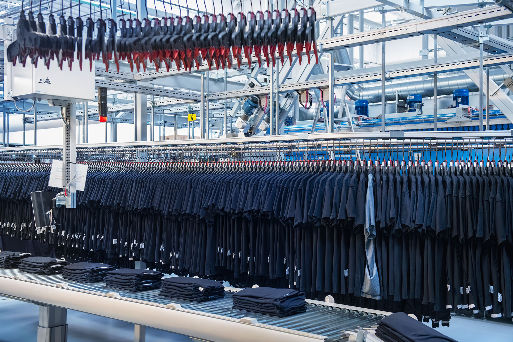

Kes me oleme?
Textile Service on rahvusvaheline teenuseettevõte, mis pakub tööriiete, hügieeni- ja puhtuslahendusi ettevõtetele üle Euroopa. Meie eesmärk on teha igapäevane tööelu lihtsamaks, turvalisemaks ja kestlikumaks, pakkudes täisteenust, mis ühendab kvaliteedi, vastutustundlikkuse ja innovatsiooni. Meie ärimudel põhineb ringmajandusel – paljusid tooteid saab osta asemel rentida. See tähendab väiksemat keskkonnajalajälge, tõhusamat ressursikasutust ning muretut teenust meie klientidele.

Mida me teeme?
Aitame ettevõtetel hoida oma töökeskkonna korras ja toimivana, pakkudes terviklikke lahendusi alates töö- ja kaitseriietest kuni hügieeni, hoolduse ja logistikani. Meie teenused on üles ehitatud nii, et kogu protsess oleks sujuv, järjepidev ja kohandatud kliendi tegelikele vajadustele. Võttes enda kanda igapäevase korralduse ja hoolduse, võimaldame klientidel keskenduda sellele, mis on nende jaoks kõige olulisem – oma põhitegevusele.
Meie väärtused
Meie tööd juhivad väärtused, mis loovad usaldusväärse aluse nii klientide kui ka partneritega koostööks. Austus, ausus ja vastutustundlikkus on põhimõtted, millest lähtume igapäevaste otsuste tegemisel ning teenuste arendamisel. Soovime tegutseda viisil, mis on läbipaistev, hooliv ja eeskujulik, olles usaldusväärne partner ning vastutustundlik tööandja.
Vaade tulevikku
Kestlikkus on meil strateegia lahutamatu osa ning suunab meie tegevust nii täna kui ka tulevikus. Keskendume ressursitõhususele ning vee- ja energiakasutuse vähendamisele kogu väärtusahela ulatuses. Peame oluliseks ka sotsiaalset vastutust, panustades töötajate heaolusse ja arengusse ning luues turvalise ja professionaalse töökeskkonna. Textile Service arendab järjepidevalt oma tegevust innovatsiooni ja digitaliseerimise kaudu, et olla usaldusväärne partner ka tulevikus.

Meie inimesed
Textile Service’s töötavad inimesed, kellel on selged rollid ja vastutus oma valdkonnas. Meie tiim ühendab erineva tausta ja kogemusega spetsialiste, kes teevad koostööd organisatsiooni toimimise ja järjepideva arengu tagamiseks. Otsused sünnivad teadmiste ja kogemuse pinnalt, iga panus on osa suuremast tervikust ning töös väärtustame professionaalsust, selget suhtlust ja vastutuse võtmist. Textile Service tiim põhineb pikaajalisel vaatel – stabiilsusel, arengul ja usaldusväärsusel.